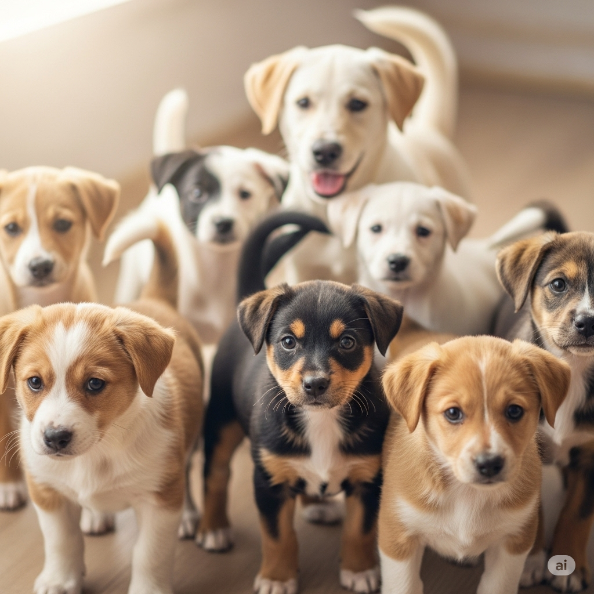
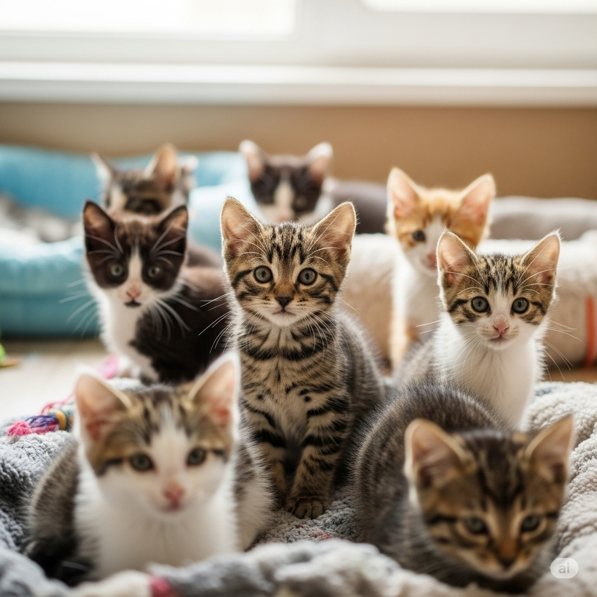
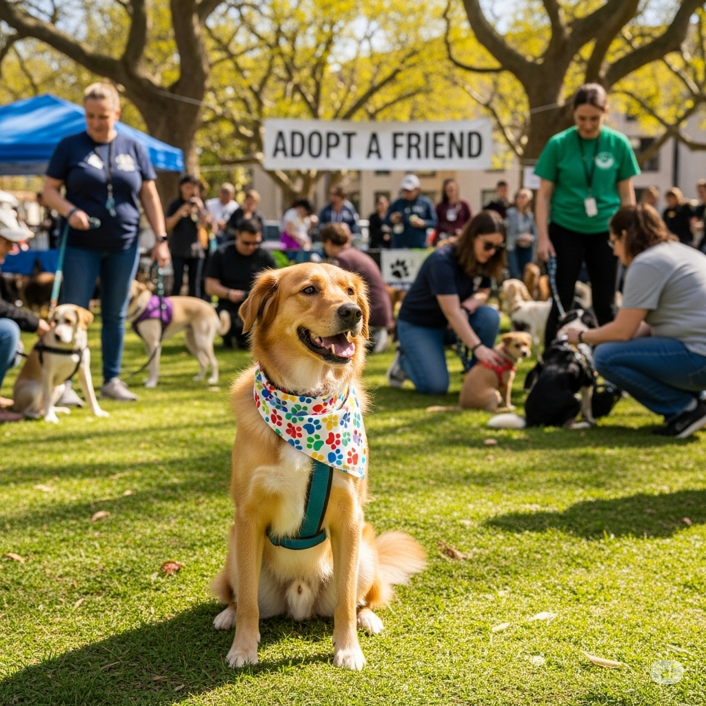

Nossos Destaques

Adoção Responsável
Encontre um amigo para a vida toda e mude o destino de um animal

Eventos de Adoção
Participe de nossos eventos e conheça pessoalmente nossos resgatados

Seja um Voluntário
Sua ajuda é fundamental para continuarmos nosso trabalho. Junte-se a nós!
Animais Esperando por um lar
| Nome | Especie/Raça | Descrição resumida |
|---|---|---|
| Rex | Cachorro/Vira-lata | Macho, porte médio, muito dócil e brincalhão. |
| Mimi | Gato/Siamês | Fêmea, filhote, adora um colo e é muito carinhosa. |
| Thor | Cachorro/Pastor alemão | Macho adulto, cão de guarda leal e protetor. |
| Luna | Gato/Vira-lata | Fêmea, adulta, calma e companheira |
Formas de Ajudar
- Adoção:Leve um de nossos animais para casa e dê a ele uma nova vida
- Doações:Contribua com qualquer valor para nos ajudar a cobrir custos com ração, veterinário e medicametos
- Trabalho voluntário:Doe seu tempo para ajudar na limpeza, alimentação e socialização dos animais
- Apadrinhamento: Não pode adotar? Apadrinhe um animal e ajude com seus custos mensais